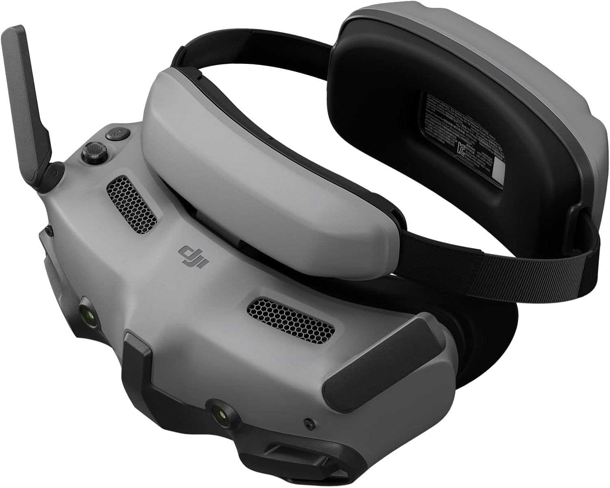

Amazon.ca · DJI Goggles 3
DJI Goggles 3
Gafas FPV con pantallas Micro-OLED de 1080p, transmisión de video O4 HD y Real View PiP, para una experiencia de vuelo totalmente inmersiva.
Ver precio en Amazon
- Pantallas Micro-OLED 1080p con refresco de hasta 100 Hz.
- Transmisión O4 HD con baja latencia (24 ms) y hasta 60 Mbps.
- Compatible con DJI Avata 2, Mini 4 Pro, Air 3, Neo y O3 Air Unit.
- Real View PiP: observa tu entorno sin quitarte las gafas.
- Ajuste de dioptrías de -6.0 D a +2.0 D y certificación de luz azul baja.
- Diadema con batería integrada (~3 h), antivaho y streaming inalámbrico.